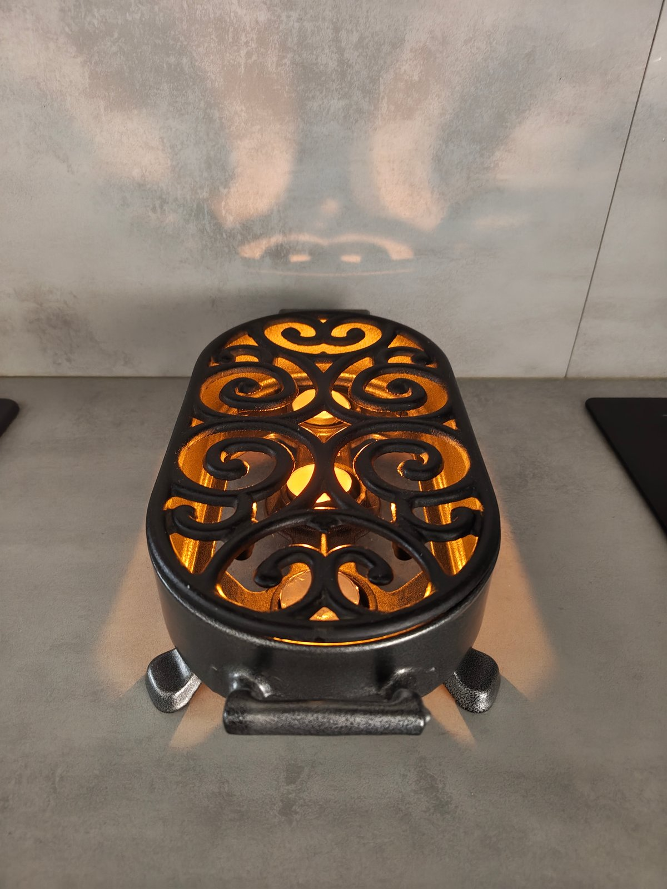
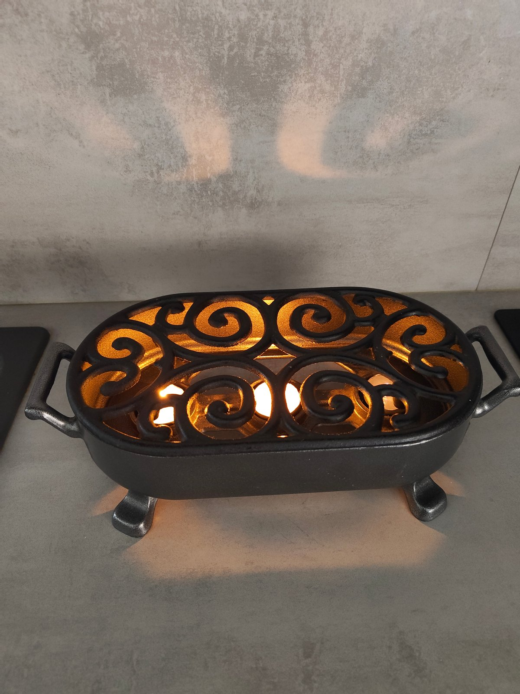
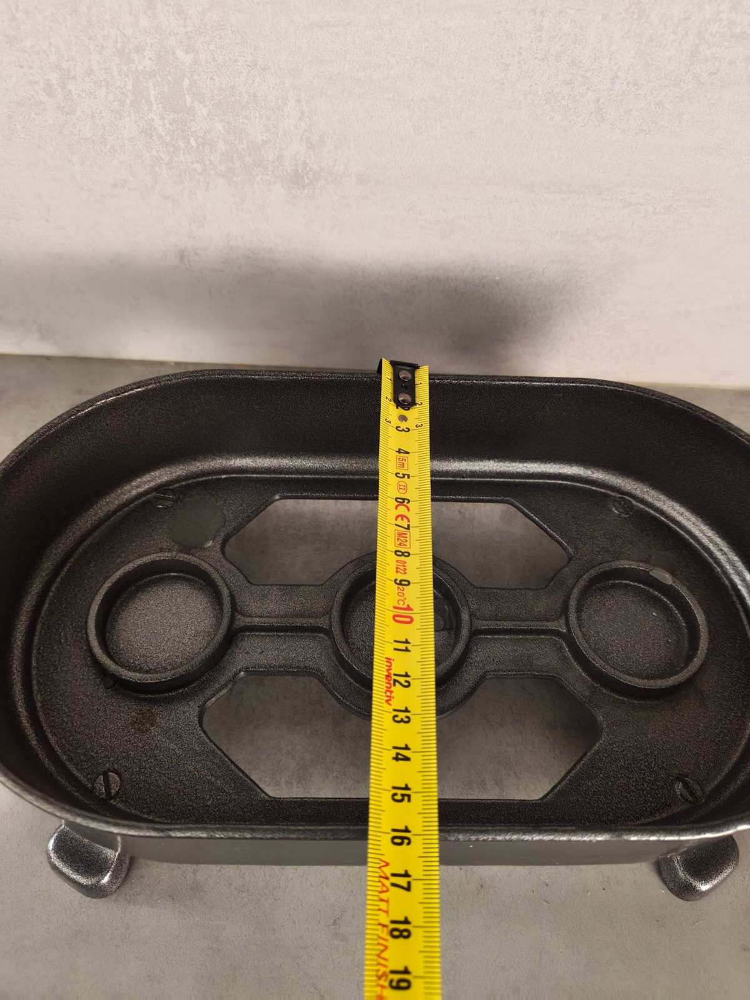
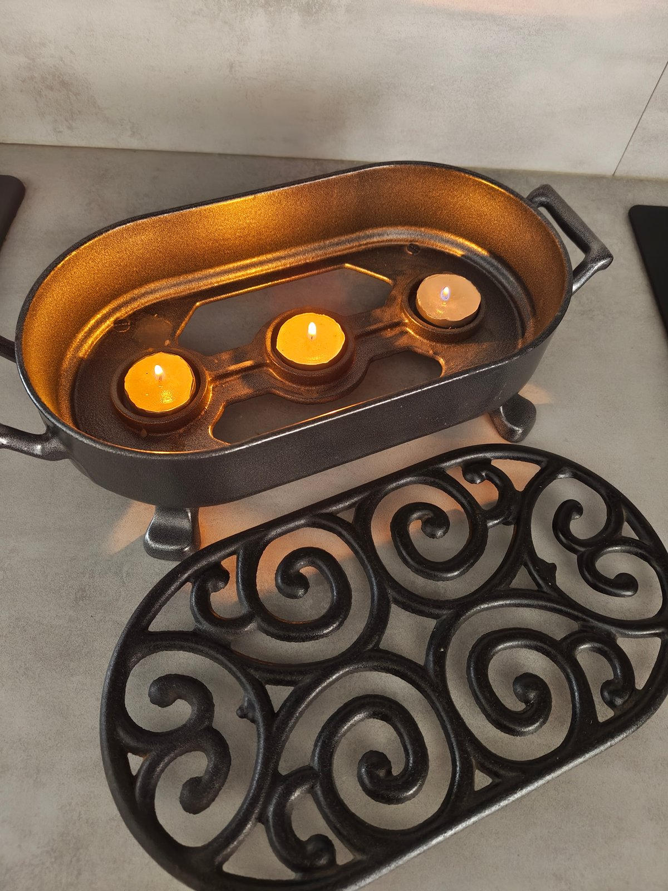
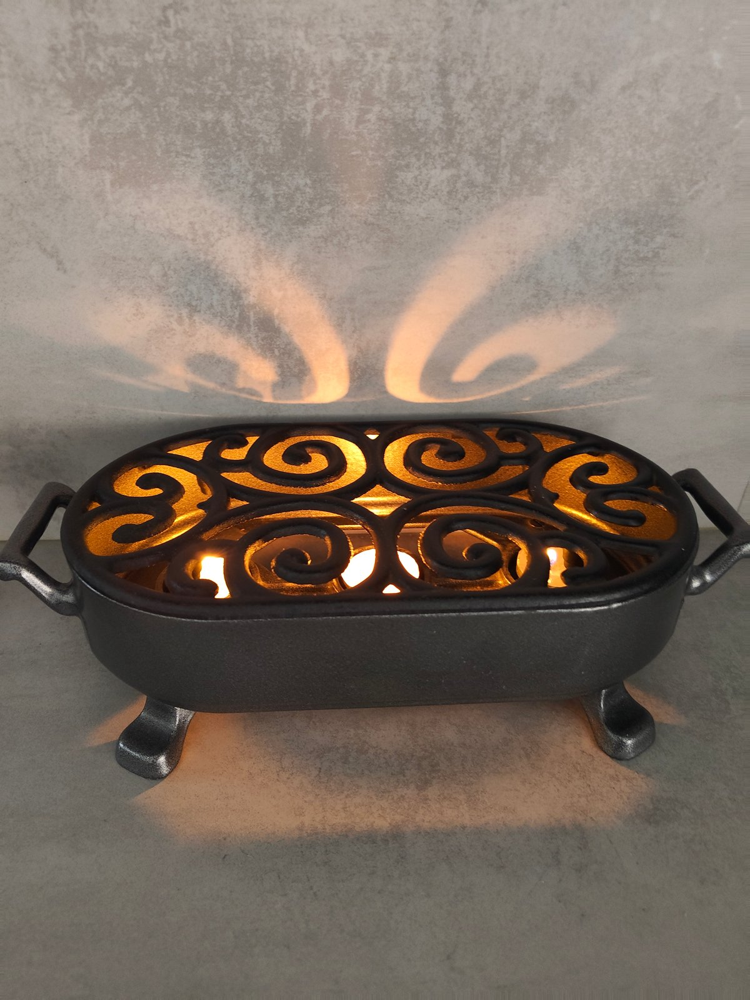
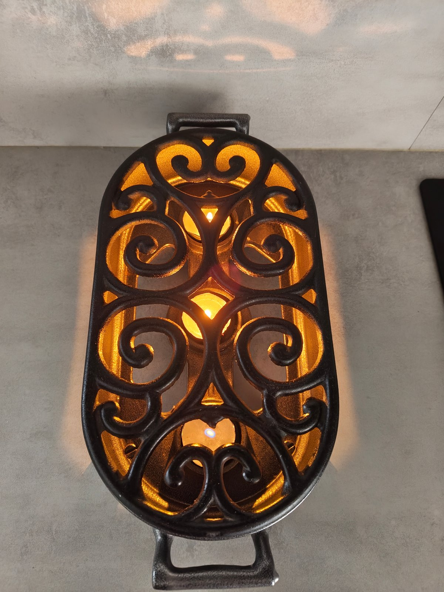
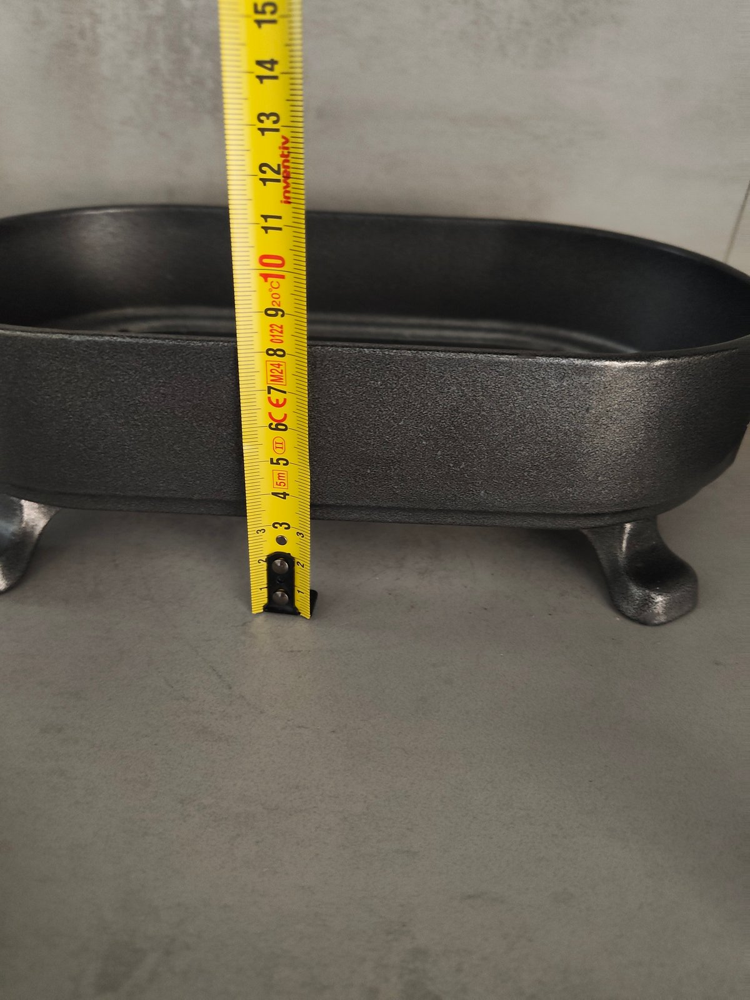
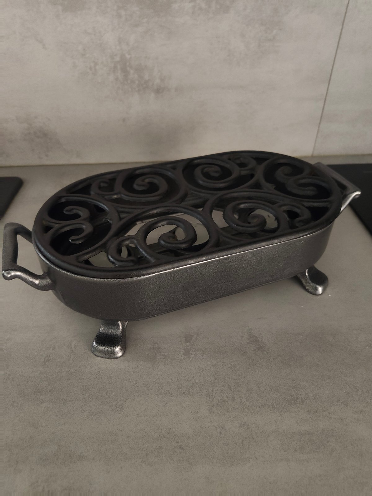

Chauffe-plat à bougie Staub en fonte – Vintage (1970–1980) – Fabriqué en France
160€
Cette pièce a été vendue. Sa page reste en ligne pour référence ; des pièces similaires disponibles sont présentées ci-dessous.
Élégant chauffe-plat à bougie vintage de Staub, en fonte émaillée. Ce chauffe-plat de table raffiné est conçu pour accueillir des bougies chauffe-plat en dessous afin de garder les plats chauds pendant le repas, ce qui le rend à la fois pratique et décoratif. Un bel ajout à toute table, parfait pour servir des plats chauds tout en conservant une présentation élégante. Sa construction en fonte massive garantit robustesse et excellente rétention de chaleur. Marque : Staub Matière : fonte émaillée Origine : fabriqué en France Époque : vintage, 1970–1980 État : bon état vintage (merci de voir les photos, qui font partie de la description) Usage : idéal pour garder au chaud assiettes ou plats de service avec des bougies chauffe-plat Une pièce rare et de collection de la marque emblématique d’ustensiles de cuisine français, parfaite pour les collectionneurs ou pour apporter une touche de charme vintage à votre table.